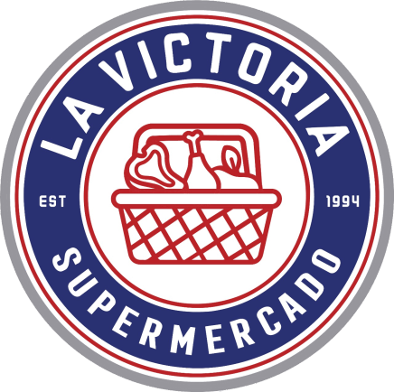

Desde 1994 · Baja California Sur
Vista previa · el pasillo y los productos finales serán de su tienda
El pasillo al que llega el carrito. Aquí siguen el resto de banners vigentes y lo nuevo de Instagram.
La historia, las cifras de la casa y el recorrido por los pasillos. (E3 · El anclaje ya se soltó: desde aquí el scroll es normal.)